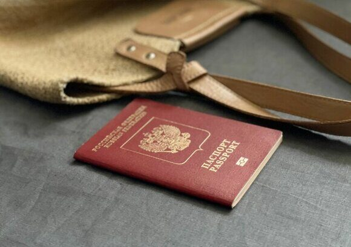

« НазадПошаговая инструкция восстановления загранпаспорта за пределами РФ Путешествия за рубеж всегда наполнены ожиданием новых впечатлений, однако даже самый тщательно спланированный отпуск может обернуться непредвиденными проблемами. Одной из таких проблем является утрата загранпаспорта за границей. Потеря или кража паспорта становится серьезным испытанием для любого гражданина, ведь он является основным документом, удостоверяющим личность и обеспечивающим возможность возвращения на родину. В данной статье мы подробно рассмотрим, как решить проблему утраты загранпаспорта за рубежом, какие шаги необходимо предпринять и какие нюансы следует учитывать для быстрого и безопасного восстановления документов. Подготовка к поездке: меры предосторожностиПрофилактика – лучшая защита в любой ситуации. Заранее принятые меры существенно облегчают разрешение кризиса, если неожиданно случится утрата паспорта. Рекомендуемые меры:
Эти простые советы помогут вам оперативно реагировать в случае возникновения форс-мажорной ситуации и значительно упростить процесс восстановления паспорта. Немедленные действия при утрате паспортаЕсли ваш загранпаспорт оказался утерян или украден за границей, первым делом необходимо сохранить спокойствие и действовать по следующей схеме: 1. Регистрация происшествия:
2. Сообщение в консульство: После того как у вас появится полицейский протокол, свяжитесь с ближайшим консульским учреждением Российской Федерации. Уточните порядок дальнейших действий и список необходимых документов для восстановления. 3. Документирование всех действий: Сохраняйте копии всех заявлений, документов и квитанций. Заведите журнал, где фиксируйте время и место каждого обращения. Такой план действий поможет вам избежать ненужных задержек и создать надежную базу для дальнейшей процедуры восстановления загранпаспорта. Обращение в консульское учреждениеПосле получения полицейского протокола следующим этапом является посещение консульства или посольства Российской Федерации в стране вашего пребывания. Здесь вам помогут оформить свидетельство на въезд (возвращение) в РФ. Важно отметить, что свидетельство является временным документом, позволяющим совершить единовременный рейс в Россию. Что необходимо подготовить?
В случае его отсутствия необходимо предоставить заверенные письменные заявления от как минимум двух граждан РФ, подтверждающих вашу личность и российское гражданство. Дополнительные документы: Из документов, выданных в России, могут понадобиться водительские права или службы удостоверений с фотографией. Подтверждение утери: Предоставьте полицейский протокол, подтверждающий факт утраты загранпаспорта. Консульские работники проверяют комплект документов на соответствие и правильность заполнения заявления. Неполный или неправильно оформленный пакет может послужить причиной для дополнительной проверки, что увеличит сроки рассмотрения заявки. Сроки оформления свидетельства на въездСрок оформления свидетельства в обычном режиме составляет до двух календарных дней с момента регистрации заявления. Однако в ряде случаев, когда требуется дополнительная проверка личности или анализ предоставленных данных, процесс может затянуться до 10–12 календарных дней. Особенности и нюансы:
Полезные советы и рекомендацииВ ситуациях, когда потеря загранпаспорта обрушивается на вас в самый неподходящий момент, важно знать несколько практических рекомендаций, которые помогут вам ориентироваться в сложившейся ситуации:
Особые случаи и нюансы процедурыПроцедура восстановления паспорта может существенно различаться в зависимости от конкретных обстоятельств. Рассмотрим несколько особых случаев: Утрата паспорта у несовершеннолетних: При оформлении свидетельства для детей потребуется присутствие законного представителя. Дополнительно могут потребоваться документы, подтверждающие родство: свидетельство о рождении, документы об усыновлении и т.д. Лица, не обладающие возможностью лично обратиться в консульство: В некоторых случаях уполномоченное лицо может выехать на встречу заявителю для приема заявления. Это касается граждан с ограниченными возможностями или лиц, находящихся в состоянии острого недомогания. Неполный комплект документов: При отсутствии российского паспорта или документов, удостоверяющих личность, консульство может запросить дополнительные справки и заверенные заявления от граждан РФ. Вопросы подтверждения гражданства: Если возникают сомнения в гражданстве заявителя, может потребоваться проведение дополнительной проверки, что приведет к увеличению сроков оформления. Во всех случаях важно оперативно действовать и четко следовать инструкциям сотрудника консульства для избежания ошибок и задержек. Возвращение в РФПосле успешного оформления временного свидетельства необходимо организовать возвращение в Россию. Вот основные шаги, которые нужно выполнить уже на родине:
Обратите внимание, что соблюдение сроков и формальностей помогает избежать дополнительных проблем и быстрее решить вопрос восстановления документов. Рекомендации для путешественниковЧтобы минимизировать вероятность возникновения кризисной ситуации, рекомендуем всем, планирующим поездку за границу, учитывать следующие советы:
Придерживаясь этих рекомендаций, вы значительно снизите риски и будете готовы к разрешению возникшей проблемы. Часто задаваемые вопросыЧто делать в первую очередь, если утратил загранпаспорт за границей? Сначала необходимо обратиться в местное отделение полиции для регистрации происшествия и получения протокола об утрате. Затем свяжитесь с консульством РФ для получения временного свидетельства на возвращение в Россию. Какие документы требуются для оформления свидетельства в консульстве? Обычно консульство требует заявление, две фотографии, паспорт гражданина РФ (если имеется) или заверенные заявления от граждан РФ, подтверждающих ваше гражданство, а также полицейский протокол, подтверждающий утрату загранпаспорта. Дополнительно могут потребоваться документы, удостоверяющие личность, выданные в РФ, такие как водительские права. Сколько времени занимает оформление свидетельства? В стандартном порядке свидетельство выдается в течение двух календарных дней. Однако в случае дополнительной проверки этот срок может увеличиться до 10–12 календарных дней. Действует ли свидетельство круглосуточно? Нет, свидетельство действительно в течение ограниченного времени – не более 15 календарных дней, что подразумевает необходимость возвращения непосредственно в Россию в этот срок. Можно ли пользоваться свидетельством для путешествий по другим странам? Свидетельство выдается исключительно для возвращения в Российскую Федерацию и не позволяет пересекать границы других стран. Если требуется дальнейшая поездка, необходимо заранее согласовать соответствующие транспортные маршруты. Обязательно ли иметь копии документов при поездке? О: Да, наличие копий загранпаспорта, российского паспорта и других важных документов существенно ускоряет процесс восстановления в случае их утраты. Рекомендуется хранить копии отдельно от оригинала. ИтогРешение проблемы утраты загранпаспорта за рубежом требует быстроты, системного подхода и правильного документирования всех этапов. Своевременное обращение в полицию и консульство РФ, наличие подготовленного пакета документов и знание нюансов оформления свидетельства – все это способствует оперативному разрешению кризисной ситуации и безопасному возвращению на родину. Каждый гражданин Российской Федерации должен быть готов к любым форс-мажорным обстоятельствам во время поездки. Заблаговременная подготовка, знание последовательности действий и аккуратное оформление документов – ключ к тому, чтобы минимизировать последствия утраты паспорта. Важно помнить, что информационная поддержка и помощь со стороны официальных учреждений, таких как консульства и посольства, является надежной опорой в критических ситуациях. Благодаря правильно продуманному алгоритму действий вы сможете справиться с проблемой утраты загранпаспорта за рубежом и вернуться домой без лишних задержек. Несмотря на стресс и возможные неудобства, возникающие в таких ситуациях, опыт многих граждан показывает, что оперативное соблюдение всех инструкций значительно упрощает процедуру восстановления документов. Внимание к мелким деталям, своевременное оформление заявлений и готовность к сотрудничеству с официальными лицами играют решающую роль в скорейшем разрешении проблемы и обеспечивают безопасное возвращение в Российскую Федерацию. Получите загранпаспорт в кратчайшие сроки – срочное оформление в центре Москвы!Паспортно-визовый центр «Север» предлагает услугу срочного оформления загранпаспорта в Москве – быстро, надежно и профессионально. Уже более 25 лет мы помогаем клиентам решать вопросы, связанные с оформлением документов. Наши преимущества:
Воспользуйтесь услугой срочного оформления загранпаспорта и забудьте о задержках и бюрократических проволочках. Просто позвоните по номеру +79255854195, и наши специалисты помогут вам оформить паспорт быстро и без лишних хлопот.
|
Комментарии
Комментариев пока нет